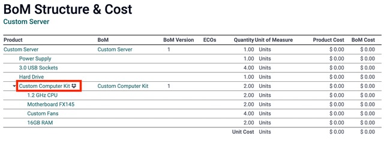

Use kits¶
In Odoo, a kit is a type of bill of materials (BoM) that can be manufactured and sold. Kits are sets of unassembled components sold to customers. They may be sold as standalone products, but are also useful tools for managing more complex bills of materials (BoMs).
Note
To use, manufacture, and sell kits, both the Manufacturing and Inventory apps need to be installed.
Create the kit as a product¶
To use a kit as a sellable product, or simply as a component organization tool, the kit should first be created as a product.
To create a kit product, go to , and click Create.
Then, assign a name to the new kit product. Next, under the General Information tab, set the Product Type to Consumable. Kit products work best as consumables, because the stock on-hand for kits is typically not tracked.
Note
Although kits should almost always be set to Consumable, companies using Anglo-Saxon accounting might need to create kits as a Storable Product. This is because when processing invoices for kits, the Cost of Goods Sold (COGS) will be posted in accounting journals.
Unlike storable products, the Routes designation under the Inventory tab does not matter for kits, since Odoo uses the routes of the kit’s individual components for replenishment purposes. All other parameters for the kit product may be modified according to preference. Once ready, click Save to save the new product.
The kit’s components must also be configured as products via . These components require no specific configuration.
Set up the kit BoM¶
After fully configuring the kit product and its components, a new BoM can be created for the kit product.
To do so, go to , and click Create. Next to the Product field, click the drop-down menu to reveal a list of products, and select the previously configured kit product.
Then, for the BoM Type field, select the Kit option. Finally, under the Components tab, click Add a line, and add each desired component, and specify their quantities under the Quantity column.
Once ready, click Save to save the newly-created BoM.
If the kit is solely being used as a sellable product, then only components need to be added under the Components tab, and configuring manufacturing operations is not necessary.
Note
When a kit is sold as a product, it appears as a single line item on the quotation and sales order. However, on delivery orders, each component of the kit is listed.
Use kits to manage complex BoMs¶
Kits are also used to manage multi-level BoMs. These are products that contain other BoM products as components, and therefore require nested BoMs. Incorporating pre-configured kits into multi-level BoMs allows for cleaner organization of bundled products.
To configure this type of BoM with a kit as a component, go to , and click Create.
Next to the Product field, click the drop-down menu to reveal a list of products, and select the desired BoM product. Then, for the BoM Type field, select the Manufacture this product option.
Under the Components tab, click Add a line, and select a kit as the component. Adding the kit as a component eliminates the need to add the kit’s components individually. Any BoM Type can be used for the higher-level product’s BoM.
Once ready, click Save to save changes.
Structure & cost¶
To access a comprehensive overview of the multi-level BoM’s components, click on the Structure & Cost smart button. Sublevel BoMs can be expanded and viewed from this report.
When creating a manufacturing order for a product with a multi-level BoM, the kit product automatically expands to show all components. Any operations in the kit’s BoM are also added to the list of work orders on the manufacturing order.
Tip
Kits are primarily used to bundle components together for organization or sale. To manage multi-level products that require manufactured sub-components, refer to this documentation on sub-assemblies.